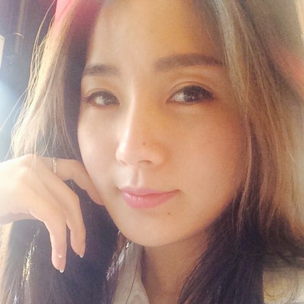

내 컴퓨터
안녕하세요! 저는 창의적인 웹 디자인과 최신 프론트엔드 기술에 열정을 가진 취업 준비생입니다. 현재는 자바 스크립트 언어를 배우고 있으며, 제가 하던 업무는 수입 화장품 회사에서 테라피스트와 웨딩플래너로 근무한 경험이 있습니다. 테라피스트로 근무하면서 고객들에게 피부 관리와 스파 서비스를 제공하였고, 고객들의 피부 건강과 아름다움을 책임지는 역할을 수행하면서, 세심한 관리와 친절한 서비스로 고객들의 만족도를 높였습니다. 또한 웨딩 플래너로서는 결혼식을 준비하고 조직하는 업무를 맡았습니다. 신랑신부의 니즈를 파악하고, 예산과 일정을 고려하여 웨딩컨셉, 장소, 음식, 초대장 등 다양한 요소들을 정보제공을 통해 꿈꾸는 결혼식을 진행할 수 있게 도와드렸습니다. 현재는 코딩을 배우고 있는데요, 코딩을 통해 문제 해결 능력을 향상시키고 창의적인 아이디어를 현실화할 수 있는 기술을 습득하기 위해 노력하고 있습니다. 다양한 경험을 통해 소통과 조율, 문제 해결 능력을 갖추었으며, 새로운 도전에 대한 열린 마음과 성실한 태도로 맡은 일에 임하고 있습니다. 언제나 긍정적이고 적극적으로 임하는 저의 모습을 보여드리겠습니다.
현재는 코딩에 열정을 가지고 학습 중이며, 소통과 조율, 문제 해결 능력을 갖춘 적극적인 사람입니다.